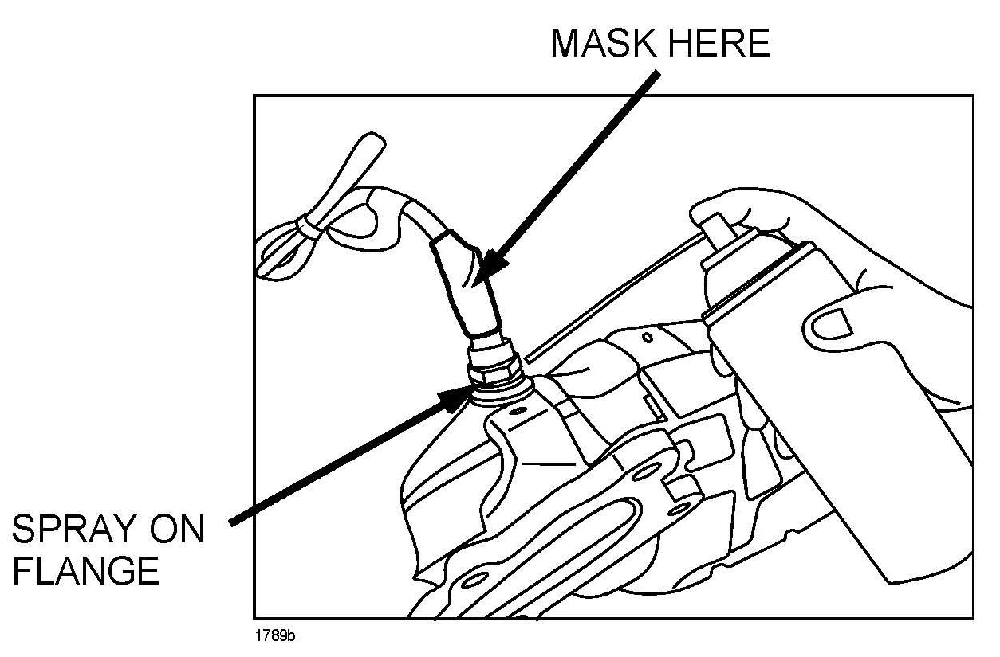
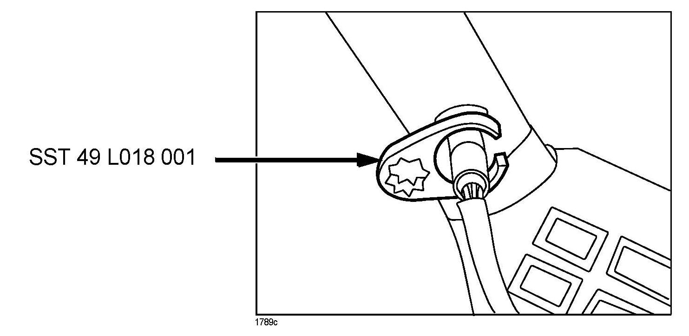
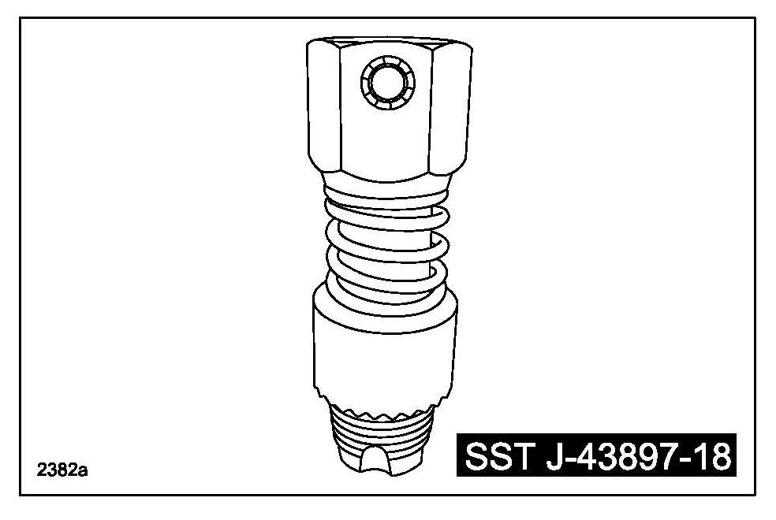

Engine Controls - O2 Sensor Removal Precautions
Bulletin No: 01-032/10Last Issued: 05/27/2010
Subject:
OXYGEN / AIR FUEL RATIO SENSOR REMOVAL CAUTION
*BULLETIN NOTE
^ This bulletin supersedes the previous bulletins 01-019/07 issued 05/10/07, 01-006/08 issued 02/11/08 and 10/10/08, 01-051/09 issued 11/19/09.
^ Changes are noted by asterisks.*
APPLICABLE MODEL(S)/VINS
1997-2003 Protege
1997-2005 Miata
1997-2002 626
1997-2002 Millenia
1997-2006 MPV
2001-2006 Tribute
2008-2010 Tribute
2008-2010 Tribute Hybrid
2003-2010 Mazda6
2004-2010 Mazda3
2004-2010 RX-8
2006-2010 Mazda5
2006-2010 MX-5
2007-2010 CX-7
2007-2010 CX-9
DESCRIPTION
Use the following repair procedure to minimize the need to replace the catalyst converter/exhaust pipe when removing oxygen sensors and/or air fuel ratio sensors.
REPAIR PROCEDURE
Oxygen Sensor Removal Procedure
WARNING:
To avoid personal injury, allow exhaust system to cool down before removing oxygen sensor.
NOTE:
In some cases oxygen sensor and/or air fuel ratio sensor seizure will occur during this removal procedure. If seizure occurs, remove the converter or exhaust pipe from the vehicle and re-attempt removal with the assembly placed in a vise. This will maximize your positioning and ability to apply adequate torque to remove the sensor.
1. If reusing oxygen sensor, mask it with masking tape to prevent lubrication soaking.

2. Spray CRC Freeze-Off (or equivalent) around flange area of oxygen sensor.
CAUTION:
Avoid excess spraying. Remaining flammable substance could catch fire.
3. Allow lubricant to reach sensor threads for a minimum of 1 - 2 minutes.
NOTE:
FOLLOW ALL PENETRANT MANUFACTURER INSTRUCTIONS LISTED ON THE PRODUCT LABEL.
4. Turn 30 degrees counter-clockwise with SST (49 L018 001).
5. Remove SST and spray lubricant again in the same place.
6. Allow lubricant to reach sensor threads for a minimum of 1 - 2 minutes.
7. Use SST to loosen sensor.

NOTE:
If sensor begins to bind, it may be necessary to work the sensor in a tightening and loosening motion to slowly work the sensor out.
8. Wipe off all excess lubricant.

*9. Clean 02 sensor threads in converter or pipe with SST J-43897-18 (which can be ordered through MStore).*
NOTE:
If the converter or exhaust pipe threads cannot be correctly cleaned on the vehicle, remove the converter or exhaust pipe from the vehicle to perform thread cleaning procedure. If the threads cannot be adequately cleaned to correctly install the sensor, then converter or exhaust pipe can be replaced. However, these parts are subject to collection to confirm the replacement was necessary.
10. Coat 02 sensor threads with "NEVER-SEEZ" (or equivalent) high temperature nickel based anti-seize grease.
WARNING:
If reusing the oxygen sensor, completely remove the masking tape to prevent vehicle fire.
11. Install 02 sensor and tighten to:
Tightening Torque: 29 - 49 Nm (22 - 36 ft. lbs.)

Disclaimer